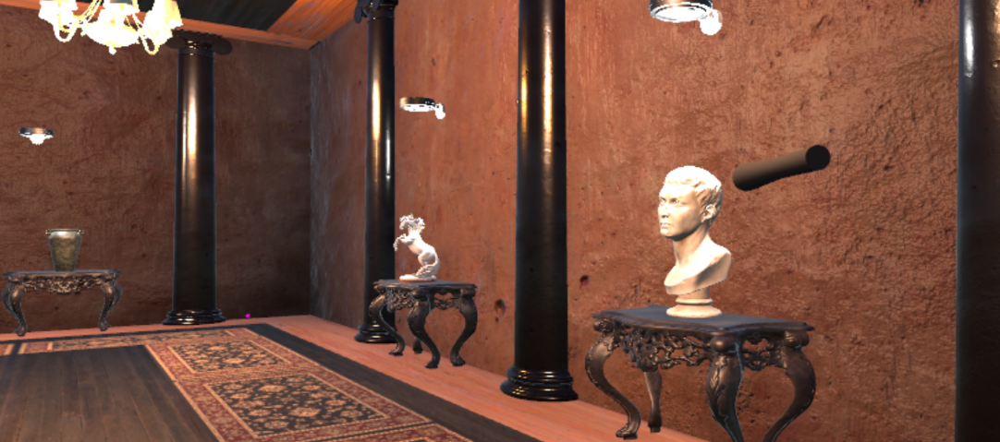

Πανεπιστήμιο
Σπουδάζω στο τμήμα Μηχανικών Πληροφορικής και Ηλεκτρονικών Συστημάτων του ΔΙΠΑΕ. Έχω επιλέξει την κατεύθυνση "Μηχανικών Δικτύων" και εκπονώ την Πτυχιακή μου εργασία με τίτλο "Μουσείο Εικονικής Πραγματικότητας για τυφλούς στο Unity" στην οποία έχω δημιουργήσει ένα εικονικό μουσείο στο οποίο μπορούν να περιηγηθούν άτομα με προβλήματα όρασης μέσω της απτικής συσκευής Touch της 3d systems, η οποία επιτρέπει στον χρήστη να αισθανθεί τα εκθέματα μέσω της αφής.
